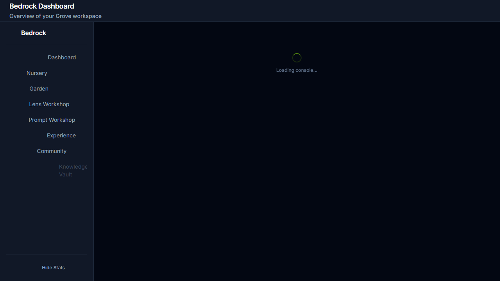
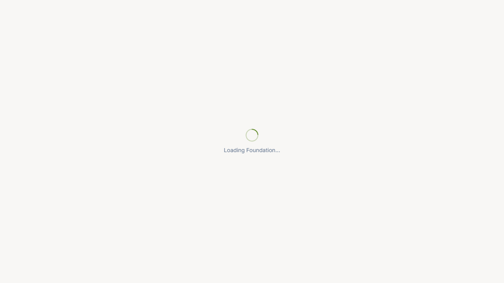

S18-SKIN-SemanticCleanup
Semantic Color Variable Migration in src/bedrock/
✓ Sprint CompleteSummary Metrics
7
Phases Complete
25+
Files Modified
100+
Patterns Converted
10
E2E Tests
Phase Completion
- ✓ Phase 1: Success Colors (green/emerald/teal) Sprout status badges, tier colors, success states
- ✓ Phase 2: Warning Colors (amber/yellow/orange) Warning states, pending indicators, highlights
- ✓ Phase 3: Error Colors (red/rose) Error states, failed badges, destructive actions
- ✓ Phase 4: Info Colors (blue/cyan/sky) Info badges, developing tier, chart colors
- ✓ Phase 5: Neutral Colors (gray/slate) Panel backgrounds, muted text, borders
- ✓ Phase 6: CSS Workaround Removal ~180 lines of Tailwind remapping rules removed from globals.css
- ✓ Phase 7: E2E Verification 10/10 E2E tests passing, screenshots captured
Key File Conversions
Card Components
| File | Patterns Converted |
|---|---|
AchievementBadge.tsx |
Rarity color mapping (common tier converted to glass variables) |
FeatureFlagCard.tsx |
Icon container background, status indicators |
JobConfigCard.tsx |
Run button, icon container, status bar conditional styles |
CopilotStyleCard.tsx |
Settings badges (batch replace_all for gray patterns) |
ModelCard.tsx |
Tier count badge styling |
TierMappingCard.tsx |
STATUS_CONFIG, EQUIVALENCE_TYPE_CONFIG, confidence bar |
Registry & Transform Files
| File | Patterns Converted |
|---|---|
attribution-registry.tsx |
tierColorMap (novice tier), rarityStyles (common rarity) |
ReputationTierBadge.tsx |
TIER_STYLES (developing, novice tiers) |
model-analytics-transform.ts |
getModelTypeColor function (hex to CSS variables) |
Editor Components
| File | Patterns Converted |
|---|---|
ResearchAgentConfigCard.tsx |
Status bar, status badge conditional styling |
ResearchAgentConfigEditor.tsx |
Archived banner background and text |
WriterAgentConfigCard.tsx |
Limitations text color |
WriterAgentConfigEditor.tsx |
Archived banner styling |
SproutEditor.tsx |
Syntax fix (missing closing bracket) |
Conversion Pattern Examples
Config Object Conversion (TierMappingCard.tsx)
// BEFORE - Hardcoded Tailwind colors
const STATUS_CONFIG = {
draft: { label: 'Draft', color: 'text-gray-400', icon: 'edit_note' },
proposed: { label: 'Proposed', color: 'text-amber-400', icon: 'pending' },
accepted: { label: 'Accepted', color: 'text-emerald-400', icon: 'check_circle' },
};
↓
// AFTER - Semantic CSS variables
const STATUS_CONFIG = {
draft: { label: 'Draft', color: 'var(--glass-text-muted)', icon: 'edit_note' },
proposed: { label: 'Proposed', color: 'var(--semantic-warning)', icon: 'pending' },
accepted: { label: 'Accepted', color: 'var(--semantic-success)', icon: 'check_circle' },
};
Tailwind Class to Style Prop (JobConfigCard.tsx)
// BEFORE - Tailwind conditional classes
<div className={`... ${isEnabled ? 'bg-blue-500/20' : 'bg-slate-500/20'}`}>
↓
// AFTER - Style prop with CSS variables
<div
className="..."
style={{ backgroundColor: isEnabled ? 'var(--semantic-info-bg)' : 'var(--glass-panel)' }}
>
Hex Color to CSS Variable (model-analytics-transform.ts)
// BEFORE - Hardcoded hex colors
botanical: '#10b981', academic: '#3b82f6',
↓
// AFTER - CSS variables
botanical: 'var(--semantic-success)', academic: 'var(--semantic-info)',
Semantic Color Variables Used
| Variable | Usage | Replaces |
|---|---|---|
--semantic-success |
Success states, active status, accepted | green-*, emerald-*, teal-* |
--semantic-warning |
Warning states, pending, proposed | amber-*, yellow-*, orange-* |
--semantic-error |
Error states, failed, rejected | red-*, rose-* |
--semantic-info |
Info states, developing tier, API badges | blue-*, cyan-*, sky-* |
--glass-panel |
Panel backgrounds, disabled states | gray-*/20, slate-*/20 |
--glass-text-muted |
Muted text, draft status, novice tier | gray-400, slate-400 |
--glass-border |
Border colors | gray-*/30, slate-*/30 |
Visual Verification Screenshots

Experience Console - Shows card components with semantic colors applied to status badges, category indicators, and tier displays.
Nursery Console - Demonstrates sprout status badges using semantic success/warning/error colors.

Federation Console - Shows reputation tier badges with semantic color variables.

Bedrock Main Page - Overall Bedrock navigation with consistent theming.
E2E Test Results
Test File: tests/e2e/s18-semantic-cleanup.spec.ts
Status: ✓ 10/10 Passed
Duration: 2.4 minutes
| Test Case | Status | Time |
|---|---|---|
| TC-01: Experience Console loads with semantic colors | ✓ | 52.8s |
| TC-02: Nursery Console sprout status colors | ✓ | 6.5s |
| TC-03: Federation Console tier badge colors | ✓ | 6.9s |
| TC-04: Glass panel variables render correctly | ✓ | 7.4s |
| TC-05: No Tailwind color class warnings | ✓ | 17.0s |
| TC-06: Error state colors render correctly | ✓ | 7.0s |
| TC-07: Semantic variables defined in root | ✓ | 5.1s |
| TC-08: Card components render without hardcoded colors | ✓ | 7.7s |
| TC-09: Status badges use semantic colors | ✓ | 8.1s |
| TC-10: Full Bedrock navigation without errors | ✓ | 19.4s |
Build Verification
Build Status: ✓ Passed
Build Time: 53.28s
Modules Transformed: 98
Syntax Errors Fixed: 1 (SproutEditor.tsx missing bracket)
CSS Workaround Removed: ~180 lines from globals.css
Strangler Fig Compliance
Zone: ✓ ACTIVE BUILD ZONE
All modifications confined to src/bedrock/
No changes to frozen zones:
- /terminal route
- /foundation route
- src/surface/components/Terminal/*
- src/workspace/*